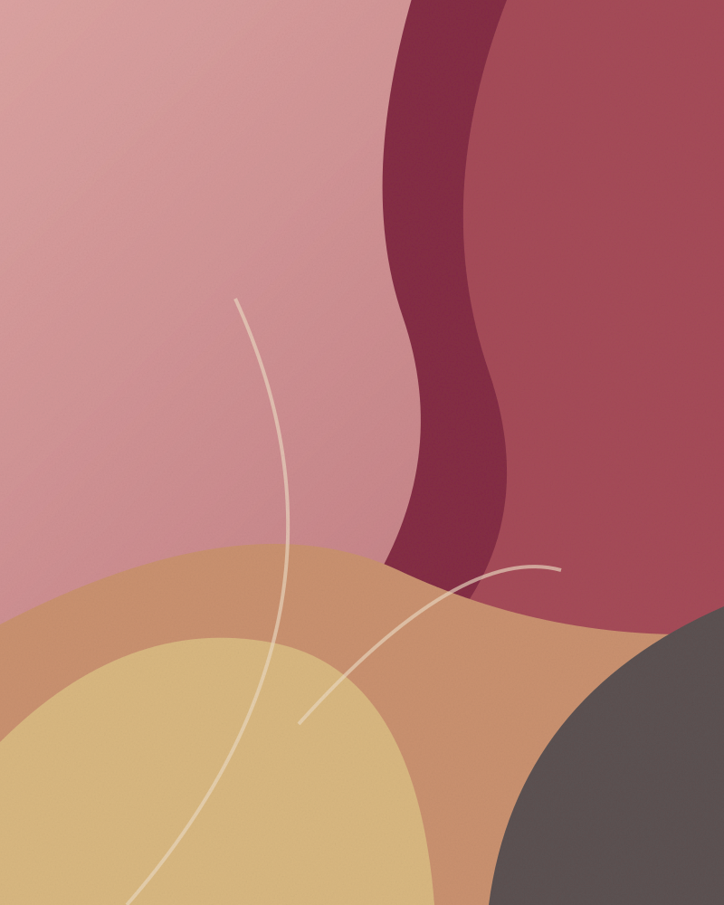

První myšlenka
Prostor, nálada, barvy. V poptávce můžete popsat, co vás oslovuje a jaký obraz hledáte.
ŽANET FRANCKOVÁ / MALÍŘKA
Obraz jako osobní setkání. Vítejte v prostoru věnovaném malbě a příběhům, které si v ní najdete.
Vstoupit do galerieOsobní portfolio · Připravujeme první kolekci

01 / GALERIE
Malý náhled budoucí galerie.
Skutečná díla a jejich příběhy teprve doplníme.
Ukázkové názvy, rozměry i dostupnost slouží pouze k návrhu webu. Žádná z ukázek není nabízena k prodeji.
02 / O AUTORCE
Žanet Francková — malířka.
Tady bude její vlastní příběh: co ji přivádí k plátnu, jak přemýšlí o barvách a co chce svou tvorbou sdílet.
Text připravíme společně s Žanet. Životopis, techniky, výstavy ani vzdělání zatím nejsou doplněné.
Začněme rozhovorem03 / OBRAZ A VÁŠ PROSTOR
Originál do vašeho prostoru nebo obraz podle společné představy. Tuto část nabídky upřesníme s autorkou před spuštěním.
Prostor, nálada, barvy. V poptávce můžete popsat, co vás oslovuje a jaký obraz hledáte.
Možnosti tvorby, rozměry, cenu i termín je potřeba nejprve individuálně potvrdit.
Způsob předání a všechny podmínky prodeje domluvíme před případnou objednávkou.
04 / KONTAKT
Máte otázku k obrazu nebo nápad na vlastní?
Kontakt připravujeme. Ověřený e-mail autorky zatím není doplněn.